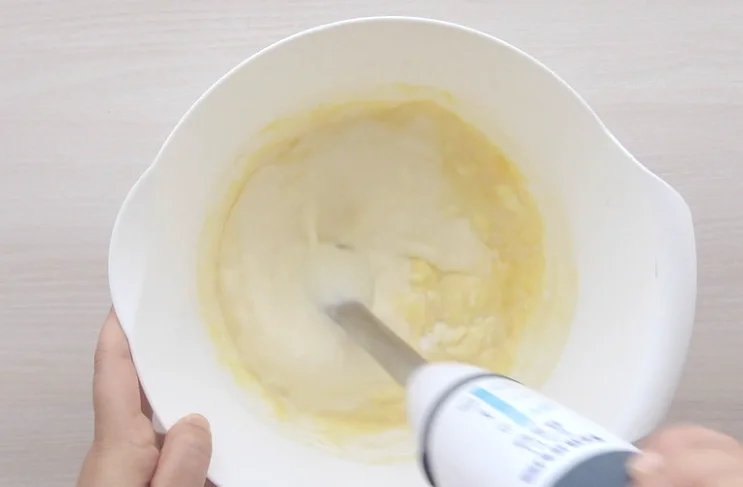

Tercer paso
En un bol añadimos todos los ingredientes, el queso crema, la nata, los dos huevos, el azúcar y, por
último la harina. Es necesario que el queso crema esté a temperatura ambiente para poder trabajarlo.
Ya
que si lo añadimos directamente del frigo, estará demasiado duro para poder integrarlo con el resto
de
ingredientes.
Cuarto paso
Podemos batir bien con unas varillas o incluso emplear una batidora de mano. Con la batidora nos
aseguraremos de que los grumos se eliminen totalmente, pero en realidad es conveniente no batir en
exceso la mezcla. Vertemos la mezcla en el molde forrado y lo introducimos en el horno previamente
calentado a 200º C.